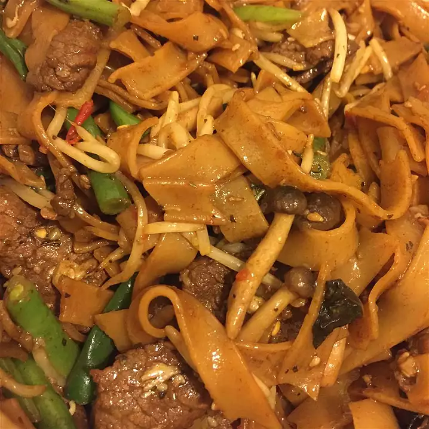

Pad Kee Mao

Description
Pad Kee Mao is a Thai dish that translates to Drunken Stir Fry in
English. The drunken description comes from the fact that it originated in
late-night revelers' kitchens after stumbling home from nightclubs at
dawn.
Ingredients
- 3 ½ ounces dried Thai-style rice noodles
- 1 ½ teaspoons olive oil
- ½ teaspoon soy sauce
- 2 cloves minced garlic
- ½ pound pork, thinly sliced
- 1 serrano pepper, minced or more to taste
- 30 fresh chopped basil leaves
- 1 teaspoon white sugar
- 1 teaspoon salt
- ½ cup of bean sprouts
Steps
-
Place the dry rice noodles in a bowl, cover with hot water, and let soak
until white and softened, about 1 hour. Drain noodles, and set aside.
-
Heat 1 1/2 teaspoon of olive oil in a wok or large skillet over low
heat, and cook and stir 2 minced garlic cloves until brown and beginning
to crisp, 2 to 3 minutes.
-
Stir in the soaked noodles, 1/2 teaspoon of thick soy sauce, and 2
teaspoons of sugar, and cook and stir until the noodles have absorbed
the soy sauce and turned brown, about 3 minutes. Remove the noodles from
the skillet.
-
Heat the remaining 1 1/2 teaspoons of olive oil in the wok over low
heat; stir in the remaining 2 minced garlic cloves, and cook until brown
and beginning to crisp, 2 to 3 minutes. Raise the heat to medium-high,
and stir in the pork, serrano pepper, basil, 1/2 teaspoon thick soy
sauce, 1 teaspoon sugar, and salt. Cook and stir until the pork is no
longer pink and the edges of the meat are beginning to brown, about 5
minutes. Return the noodles to the wok, and stir in the bean sprouts.
Cook and stir until heated through, about 5 more minutes.